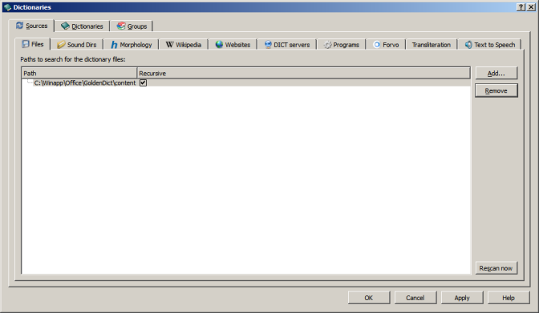
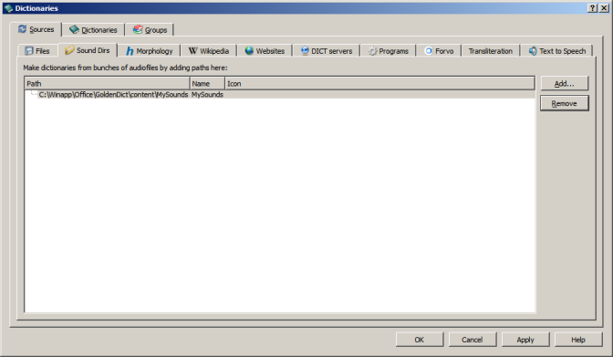
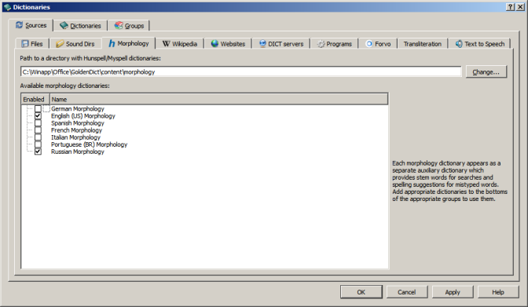
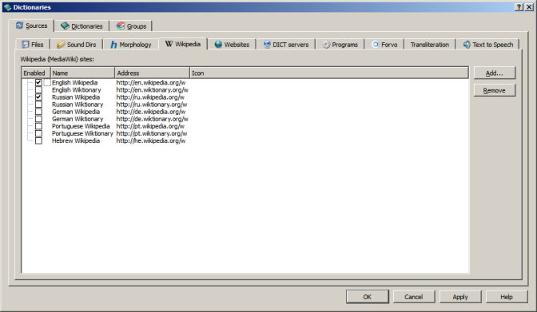
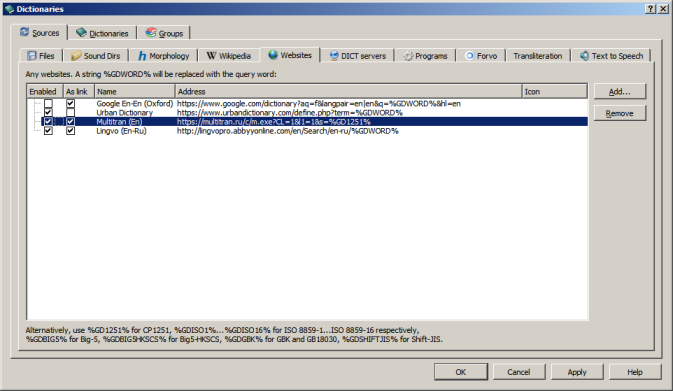
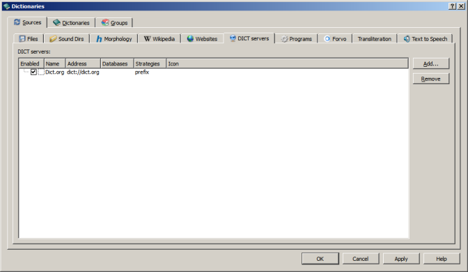
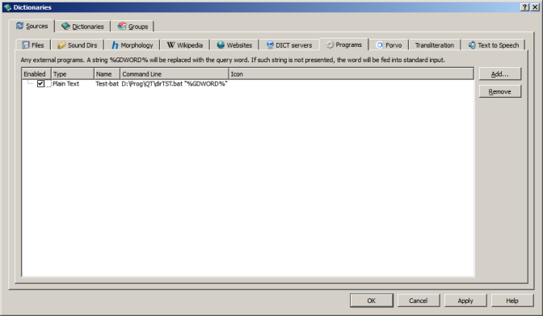
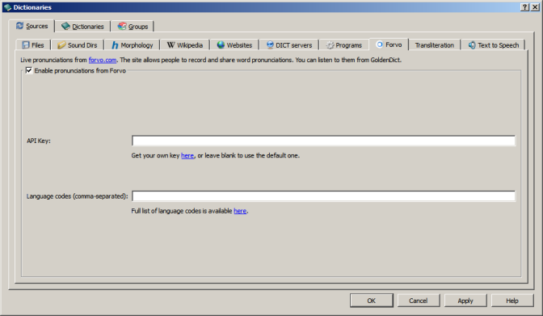
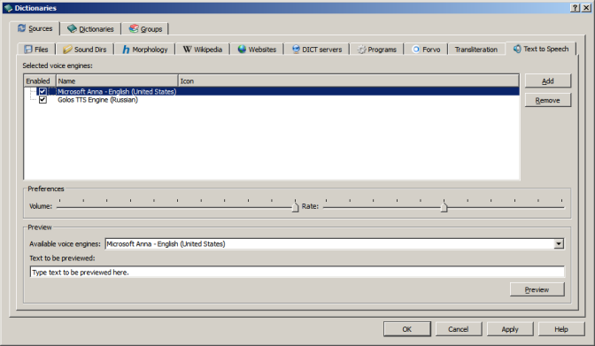

Dictionaries addition dialog can be called via menu "Edit" -> "Dictionaries..." or by hotkey F3. It contains several tabs.
\chapter5.1 Sources
Here you can add dictionaries of different types. This tab contains some more tabs.
5.1.1 "Files" tab

Here you can add local dictionaries. It needs to set folder with dictionaries by "Add" button and set "Recursive" checkbox if this folder contains some more folders with dictionaries. GoldenDict will scan these folders (by pressing button "Rescan now", "Apply" or "OK") and add found dictionaries into dictionaries list. "Rescan" button start forced scan of all folders in list. It is necessary if some dictionary was added to these folders when GoldenDict works. Buttons "Apply" and "OK" start rescan only if folders list was changed.
"Remove" button remove selected folder from list.
5.1.2 "Sound dirs" tab

Here you can add sound files in separate folders. To add such folder it needs to set folder by "Add" button. In the "Name" column you can set name with which this folder will be added to dictionaries list. In the "Icon" column you can set custom icon file for this sound files set. If you add icon file name without path GoldenDict will search this file in configuration folder.
5.1.3 "Morphology" tab

Here you can turn on/off morphology dictionaries. Such dictionaries in Hunspell format (.aff + .dic) should be placed into "content/morphology" subfolder of GoldenDict folder. GoldenDict scan this folder and create list of available dictionaries. To turn on dictionary just set mark in corresponding column.
5.1.4 "Wikipedia" tab

Here you can add web-sites which uses Wiki engine. To add such site you should set it url, name for dictionaries list and set mark in "Enabled" column. In the "Icon" column you can set custom icon for this site. If you add icon file name without path GoldenDict will search this file in configuration folder.
5.1.5 "Websites" tab

Here you can add any website which allow to set target word in url. To add such site you should set it url with target word template, name for dictionaries list and set mark in "Enabled" column. In the "Icon" column you can set custom icon for this site. If you add icon file name without path GoldenDict will search this file in configuration folder. "As link" column define method of article insertion into common page. If this option is set article will be inserted as link inside <iframe> tag (preferable mode). If articles are not loaded in this mode turn this option off, then articles will be inserted as html-code.
Target word can be inserted into url in next encodings::
| Target word template | Encoding |
|---|---|
| %GDWORD% | UTF-8 |
| %GD1251% | Windows-1251 |
| %GDISO1% ... %GDISO16% | ISO 8859-1 ... ISO 8859-16 respectively |
| %GDBIG5% | Big-5 |
| %GDBIG5HKSCS% | Big5-HKSCS |
| %GDGBK% | GBK and GB 18030 |
| %GDSHIFTJIS% | Shift-JIS |
5.1.6 "DICT servers" tab

Here you can add servers which uses DICT protocol. To add such server you should set its url, name for dictionaries list, server bases list, search strategies list and set mark in "Enabled" column. If bases list is empty GoldenDict will use all server bases. If search strategies list is empty GoldenDict will use "prefix" strategy (comparing the first part of the word).
In the "Icon" column you can set custom icon for every server. If you add icon file name without path GoldenDict will search this file in configuration folder.
5.1.7 "Programs" tab

Here you can add external applications. To add such application you should set command line for its launch, name for dictionaries list and application type. The %GDWORD% template in command line will be replaced by word from search line. If command line don't contains such template the word will be fed into standard input stream in 8-bit current locale encoding.
Allowed application types:
| Application type | The purpose of application |
|---|---|
| Audio | Application play sound. |
| Text | Application output some plain text in 8-bit current locale encoding into standard output stream. This text will be shown as separate article. |
| Html | Application output some html code into standard output stream. This code will be shown as separate article. |
| Prefix | Application output some word list into standard output stream. This list will be added in common matches list. |
In the "Icon" column you can set custom icon for every application. If you add icon file name without path GoldenDict will search this file in configuration folder.
5.1.8 "Forvo" tab

Here you can tune the parameters for connection to Forvo server - base of live pronunciations. To use Forvo service you should obtain user key and place it into "API Key" line. Also you should to set language codes in "Language codes" line.
5.1.9 "Transliteration" tab

Here you can add transliteration algorithms. To add algorithm into dictionaries list just set mark beside it. When such dictionary added into current dictionaries group GoldenDict will search word in the input line as well as result of its handling by corresponding transliteration algorithm.
5.1.10 "Text To Speech" tab (only under Windows and MacOS)

Here you can add text-to-speech engines installed in system. List of such engines shown in combobox "Available voice engines". To add engine select it in list and press "Add" button. For every engine you can tune speech volume and rate by corresponding sliders.
You can press "Preview" button to send to selected engine string from line "Text to be previewed".
In the "Icon" column you can set custom icon for every engine. If you add icon file name without path GoldenDict will search this file in configuration folder.
\chapter5.2 Dictionaries
Here you can sort common dictionaries list. It can be completed manually by dragging dictionaries by mouse as well as automatically via context menu. Also here you can see dictionary parameters. The dictionaries filter line allows filter list by dictionary name.
Via context menu of dictionaries list you can sort this list. Sorting can be completed it two modes:
| Sort by name | Alphabetical sorting by dictionary name. |
| Sort by language | Alphabetical sorting by dictionary source language, target language and name. |
For some local dictionaries you also can call dictionary headwords dialog.
To remove dictionary from list without deleting it just drag this dictionary into "Inactive (disabled) dictionaries" window.
\chapter5.3 Groups
Here you can create and edit dictionary groups. To add dictionary into group just drag it into groups window, to remove it drag it back to dictionaries list. Also you can press "Auto groups button" to automatically create groups for all presented in dictionaries list language directions. Via context menu of such automatically created groups you can execute additional dictionaries grouping by source or target language and combine dictionaries in more large groups.
Via "Group icon" list box you can select icon for current group. This icon will be shown beside group name in groups list.
In "Shortcut" line you can set hotkey to select this group. Just select this line and press shortcut keys.
"Folder in Favorites" line allow to bind some Favorites folder to this group. Headwords opened in this group will be store in given Favorites folder. Respectively, headwords from given Favorites folder will be opened in this group. A nested folders is allowed, separator is "/" or "\" character. If given folder is absent in Favorites it will be created while first headword store from this group. If folder is not given then headwords from this group will be store in root folder of Favorites.
Buttons:
| "Add group" | Create new group |
| "Auto groups" | Automatic grouping by language directions |
| "Rename group" | Rename current group |
| "Remove group" | Remove current group |
| "Remove all groups" | Remove all groups |